Eight scenarios: the core flows (1–5), the risk red team (6), Indian tax (7) and the assistant (8). Each step: what to do, which agent acts and what event it sends, and what you should see. Generated by tests/e2e/demo_scenarios.py, which performs every step on the running stack first — the result and screenshot in each row are from that run.
F7D633) · 28 / 28 steps as described
· see also showcase.html (what to say) and project-flow.html (status)./run.sh # first run builds everything ./scripts/seed-demo-data.sh # demo accounts (password DemoPass123!), demo vendor, licences, stock ./scripts/download-models.sh # optional: LayoutLMv3 + Legal-BERT ./scripts/download-sanctions.sh # scenario 6: the consolidated sanctions list ollama pull llama3.2:3b nomic-embed-text # scenario 8: the assistant's models python tests/e2e/demo_scenarios.py # optional: run all eight once and refresh this page (~8 min)Log in at localhost:8080 as
requester@, approver@, finance@ or admin@demo.example.com. Use a private window per role. Scenario 3 continues scenario 2's order; scenario 5 continues scenario 4's vendor. If a row here is red, that step is broken on this machine — fix or skip it before presenting.| # | Do | Agent · event | You should see | Screen |
|---|---|---|---|---|
| 1 | As requester: New Request → licence, vendor Acme IT Supplies Inc, 1 × Figma Professional seat at ₹2,500 → Submit. | Approval & Inventoryapproval.requested |
The request page shows Pending approval; the chain is one step (department manager) because ₹2,500 is in the ₹500–5,000 tier. as described PR-f41f3cf3 · pending_approval · chain dept_manager | 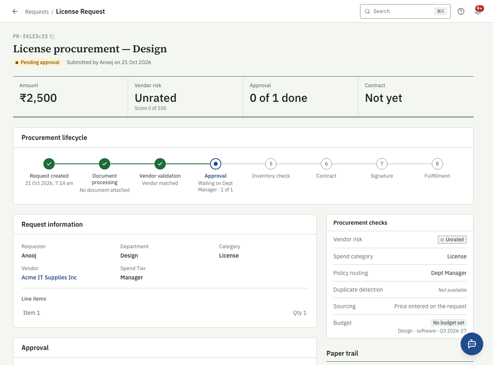 |
| 2 | As approver: Approval Queue → open the request → Approve. (Optionally first try Approve as the requester: refused.) | Approval & Inventory (Temporal workflow)approval.decided |
Status flips to Approved a moment later; the requester can't approve their own request. as described requester's own approve → 403; approver → approved | 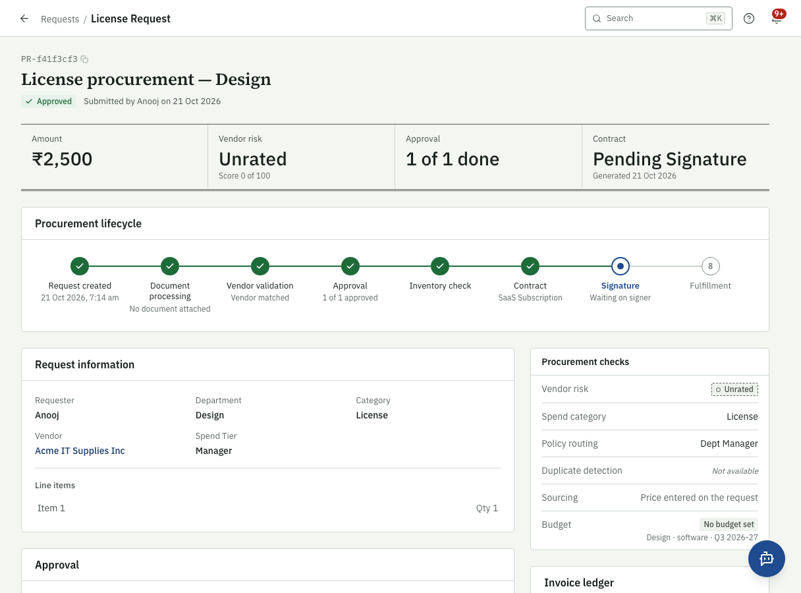 |
| 3 | Nothing — wait ~5 s, then open Contracts. | Contract & Riskcontract.generated |
A contract for this request, Pending signature, marked as sent automatically; clauses read by Legal-BERT. as described contract cd12961f · pending_signature · sent automatically | 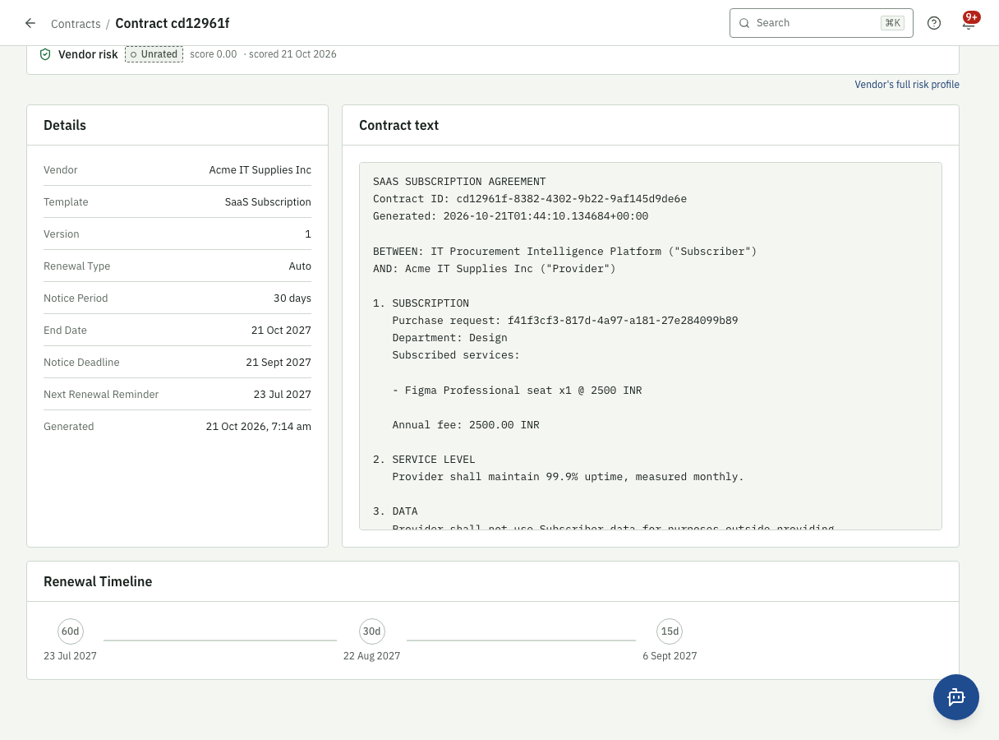 |
| 4 | As finance: open the contract → Sign now → type a name, tick consent → Sign. | Contract & Risk → Approval & Inventorycontract.signed |
Contract Signed with a signature certificate; the request moves to Ordered. (The vendor's risk checks are incomplete in the demo, so the signer ticks the risk acknowledgement; a fully assessed Low/Medium vendor signs without it.) as described signed (vendor cleared: no acknowledgement needed) · request ordered · certificate issued | 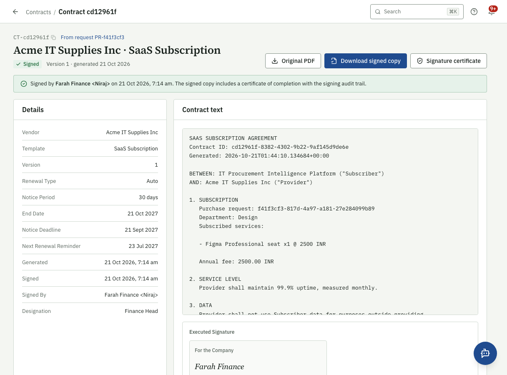 |
| 5 | As requester: open the request → Mark as received. | Approval & Inventory— |
Status Fulfilled; every lifecycle step is now ticked. as described fulfilled | 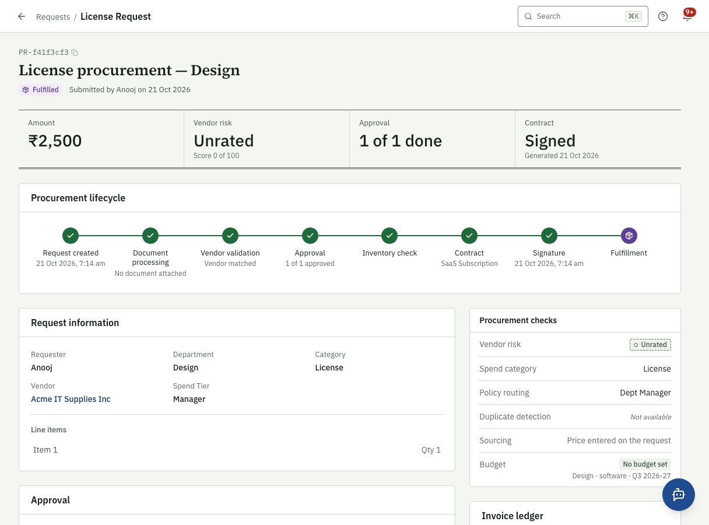 |
| # | Do | Agent · event | You should see | Screen |
|---|---|---|---|---|
| 1 | Copy a vendor quote into ./inbox (here: a quote under ₹500 from a vendor the system has never seen). Watch Control Panel → Dropped files. | Document & Vendor (inbox watcher, worker pipeline)document.ingested → document.classified, vendor.matched |
Within ~30 s the file is scanned, stored, read and classified as a quote; a new vendor is created from it. as described ₹420.08 quote · classified as quote · uploader inbox@procurement.local | 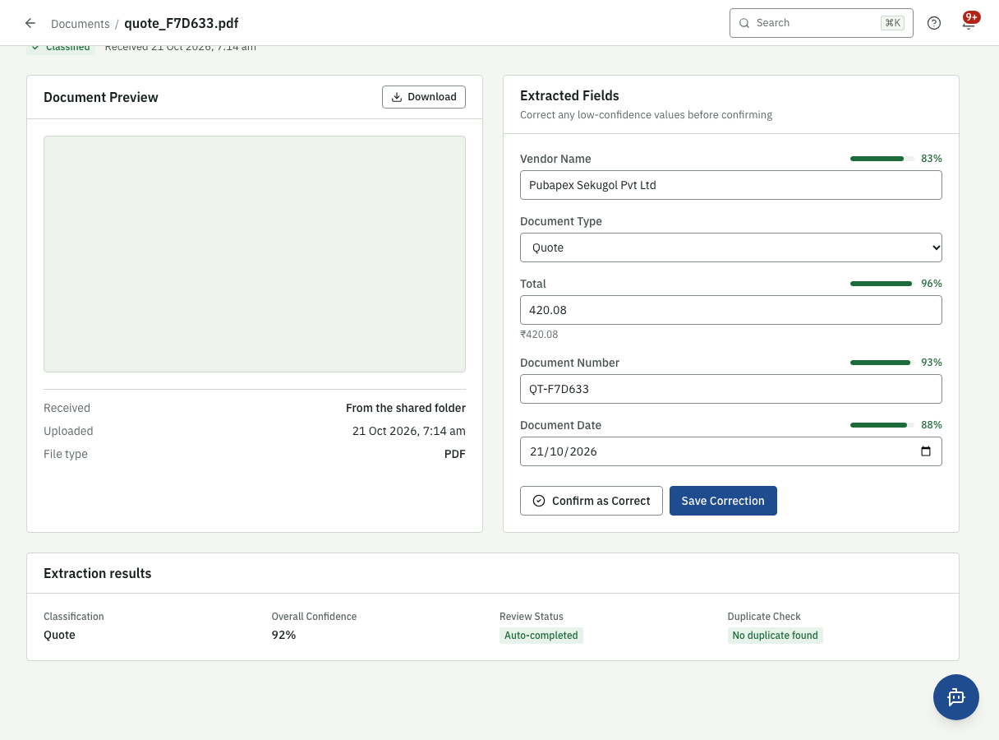 |
| 2 | Usually nothing. If the document says Needs review (most often the LayoutLMv3 cross-check read the subtotal as the total), as finance open it, check the total against the PDF and click Confirm as Correct. | Approval & Inventoryapproval.requested, approval.decided |
A purchase request created from the quote and auto-approved (under ₹500) — straight away, or right after the confirmation; a quote that needs review never becomes a request on its own. as described PR-62522d9b · auto-approved (≤ ₹500 tier) | 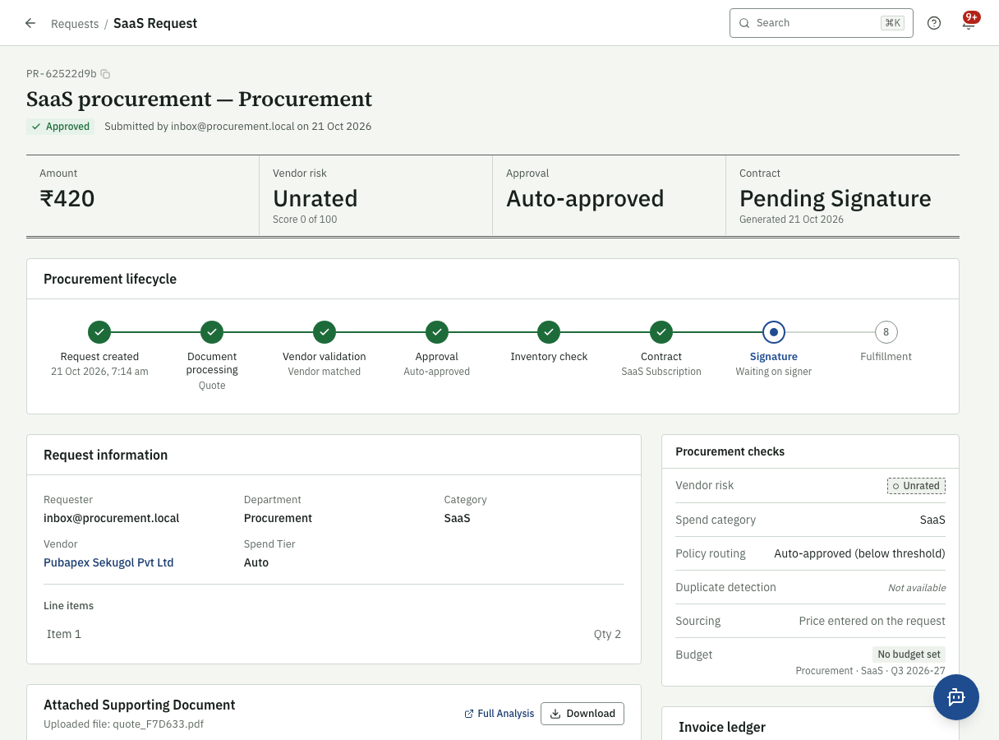 |
| 3 | Nothing. | Contract & Riskcontract.generated |
A contract, Pending signature — Control Panel → Dropped files links document, request and contract. as described contract sent for signature automatically | 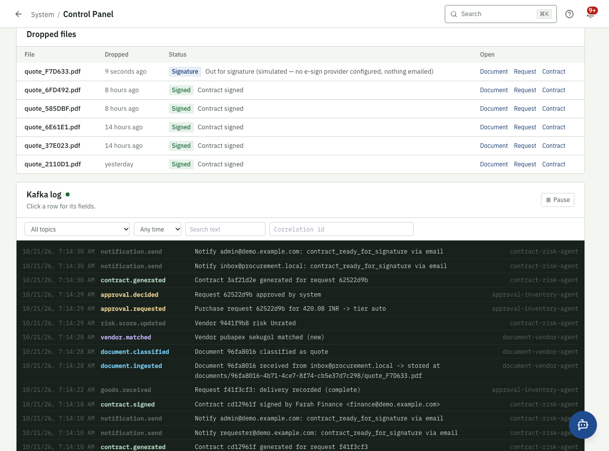 |
| 4 | As finance: open the contract → Sign now. (The new vendor was scored and screened when the contract was made; if it came out High, tick the risk acknowledgement.) | Contract & Risk → Approval & Inventorycontract.signed |
Contract Signed, request Ordered — from a dropped file with one human action. as described vendor High → acknowledgement asked, given · request ordered | 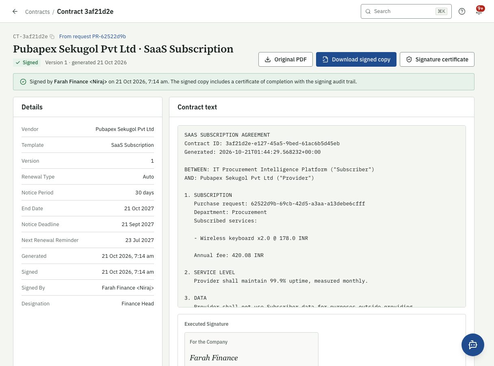 |
| # | Do | Agent · event | You should see | Screen |
|---|---|---|---|---|
| 1 | As finance: Documents → Upload an invoice from the scenario-2 vendor that quotes the PO number but charges 10 % more per item. | Document & Vendor → Approval & Inventory (invoice ledger)document.classified |
The invoice is read and linked to the order, but flagged as a variance (“unit price … is above the agreed …”): it goes to Needs review, nothing is booked, and the request stays Ordered. as described ₹462.09 · variance: 'Wireless keyboard': unit price 195.80 is above the agreed 178.00 · needs review · request still ordered | 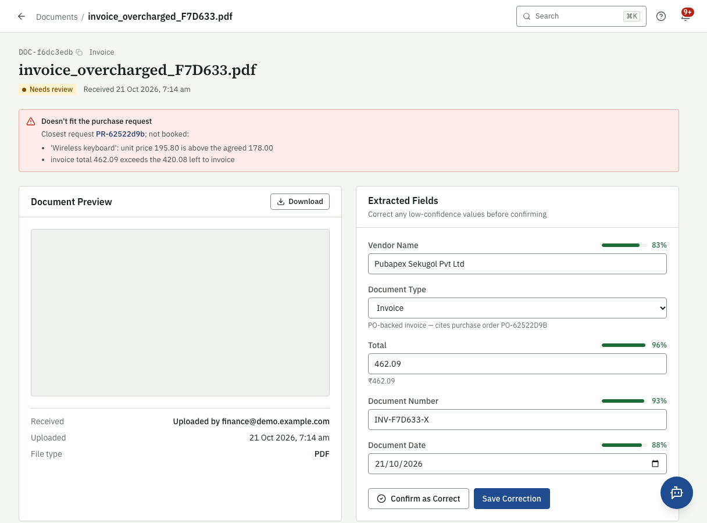 |
| 2 | Upload the correct invoice (same PO, agreed prices). | Document & Vendor → Approval & Inventoryinvoice.matched |
Matched line by line to the request; the request moves to Invoice received with nothing left to invoice. as described ₹420.08 · matched to PR-62522d9b · request invoice_received · nothing left to invoice | 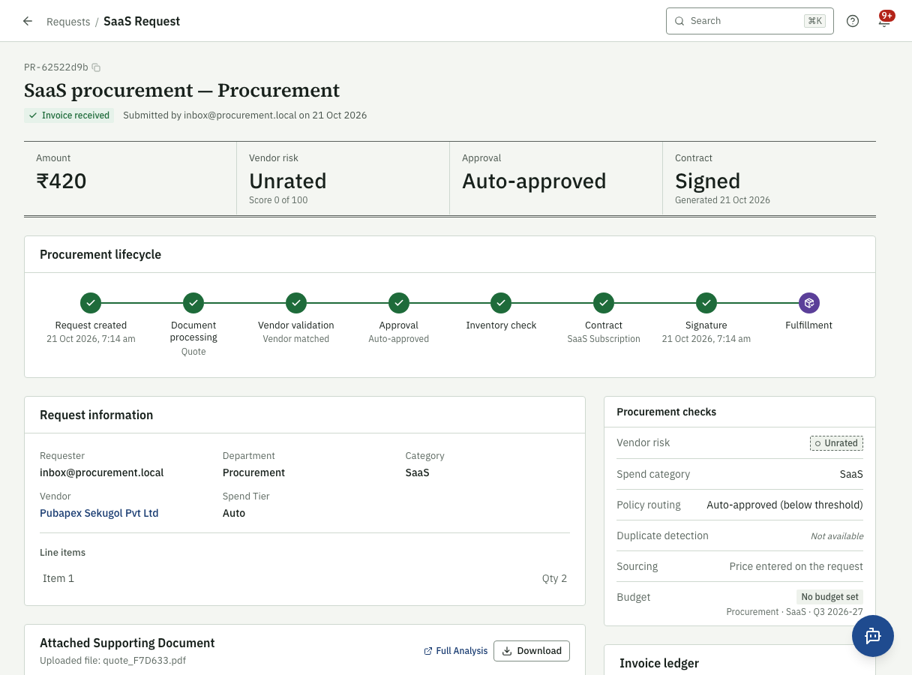 |
| # | Do | Agent · event | You should see | Screen |
|---|---|---|---|---|
| 1 | As finance: Vendors → Onboard vendor → name Acme IT Suplies Inc, GSTIN 27AAPFU0939F1ZX → Check profile. Then change the name to Acme IT Supply Co and clear the GSTIN → Check profile. | Document & Vendor— |
First: duplicate of “Acme IT Supplies Inc” and GSTIN failed check-digit validation — Onboard stays disabled. Then: a look-alike warning (87 % similar) and a no-GSTIN warning, each to be confirmed with a reason. as described typo'd name → duplicate refused · bad GSTIN check digit refused · similar name → look-alike to confirm | — |
| 2 | Onboard a real new vendor without a GSTIN (give the reason) and with bank details. | Document & Vendorvendor.payment_details_flagged |
The vendor exists; its bank details are pending verification by a second person (scenario 5). as described onboarded without GSTIN (reason given) · bank details pending a second person | 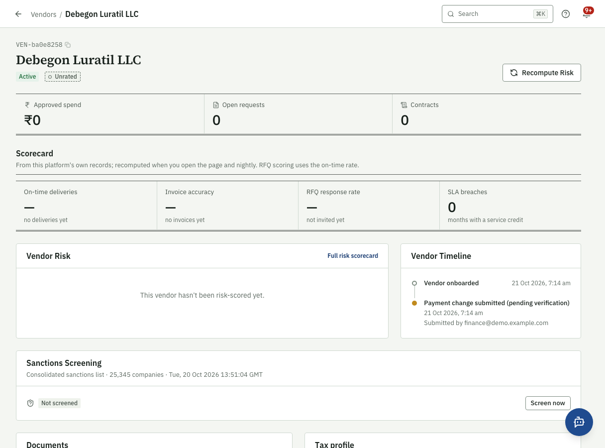 |
| 3 | Still as finance, on the vendor page → Full risk scorecard → Recompute Rating. | Contract & Riskrisk.score.updated |
The deterministic scorecard lists each check with its points and source; a new foreign vendor with most checks not yet assessed is provisional and not cleared. It has also been screened against the sanctions list (Clear). as described scored 0 points · Unrated · provisional · not cleared · sanctions screening: clear | 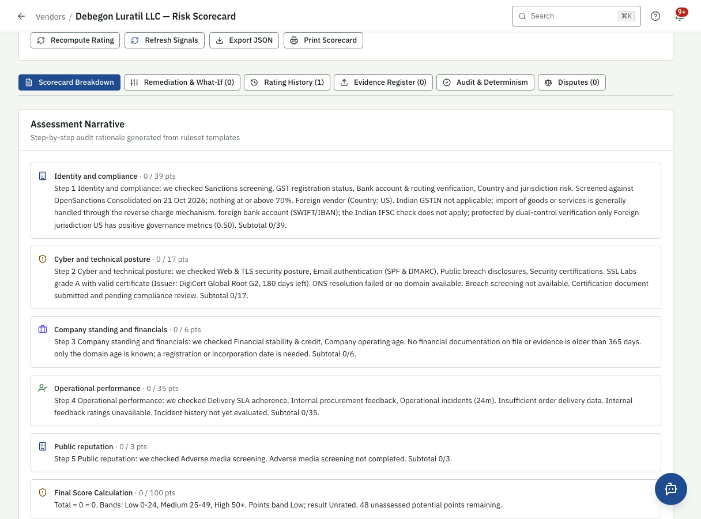 |
| 4 | As requester: a ₹4,200 SaaS request for that vendor; as approver: approve it. | Approval & Inventory → Contract & Riskapproval.requested, approval.decided, contract.generated |
A contract, Pending signature, whose Vendor risk panel shows the vendor isn't cleared and says signing needs an acknowledgement. as described approved → contract 26d108ca pending signature · risk panel: “Vendor risk checks are incomplete (Unrated).” | 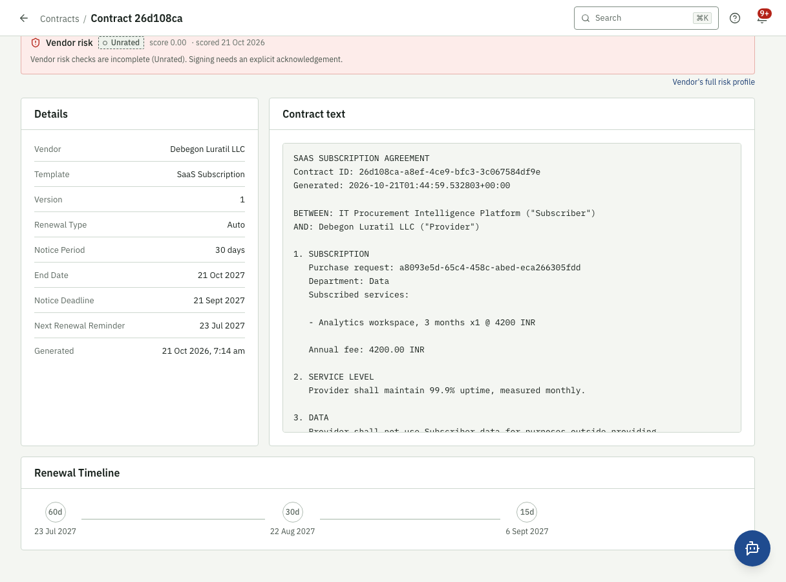 |
| 5 | As finance: Sign now — first without ticking the risk acknowledgement, then with it. | Contract & Riskcontract.signed |
Sign stays disabled until the risk is acknowledged; the signature certificate records the band and the acknowledgement. as described without acknowledgement → refused (409); with it → signed; certificate records Unrated + acknowledged | 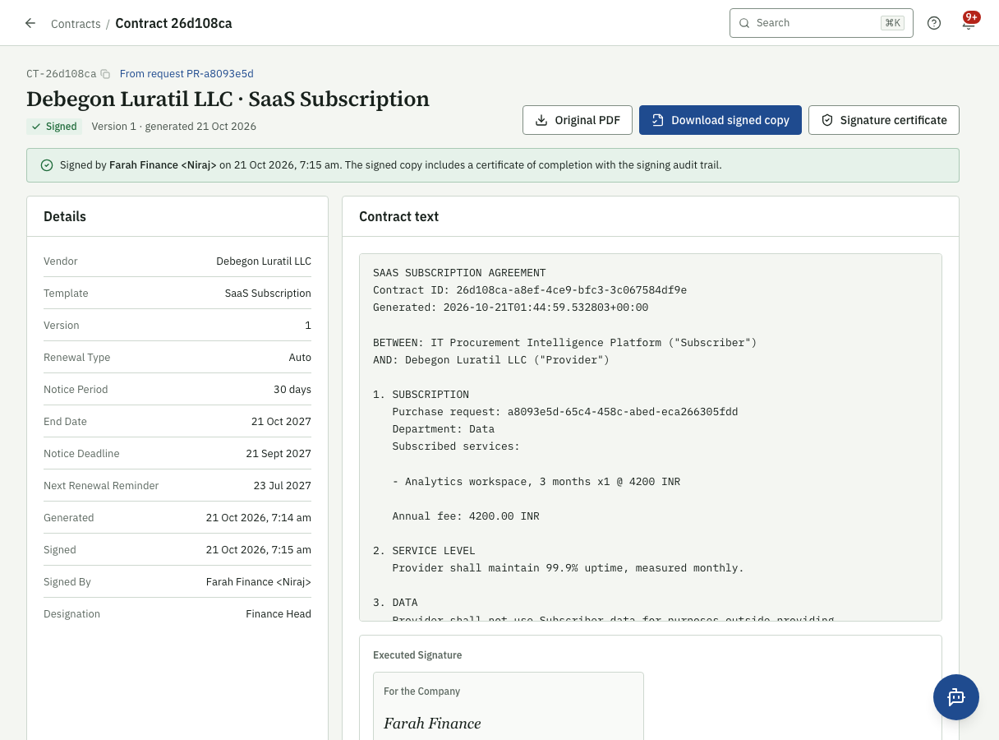 |
| # | Do | Agent · event | You should see | Screen |
|---|---|---|---|---|
| 1 | As finance (who entered the bank details): vendor page → Payment Detail Changes → Verify. | Document & Vendor— |
Refused: the person who submitted a change can't verify it. Invoices for this vendor are held until it's verified. as described submitted by finance@demo.example.com → verifying it themselves refused (403) | 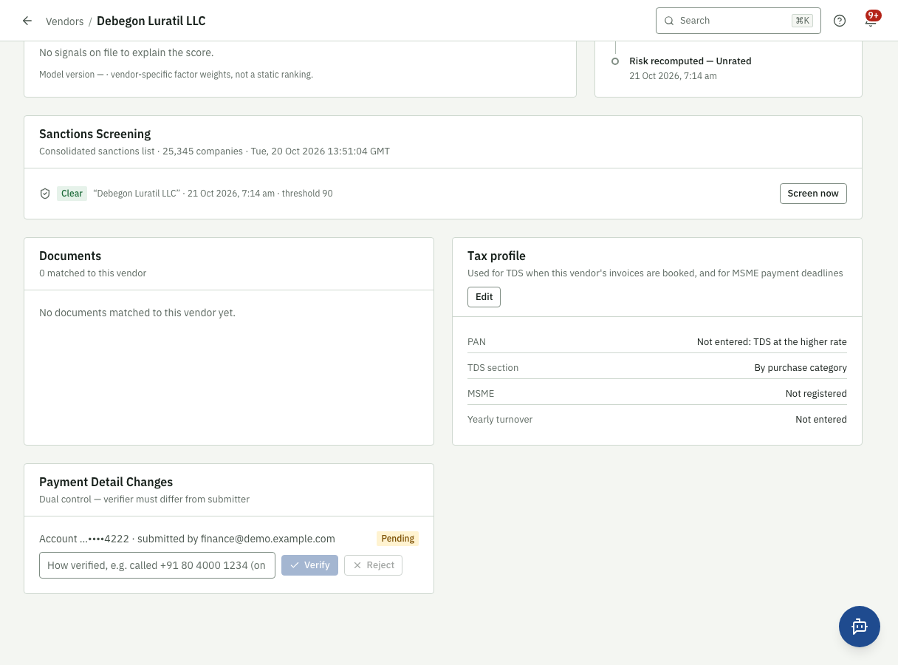 |
| 2 | As admin: same page → Verify, channel “phone number on file”, with a note. | Document & Vendor— (audit log entry) |
Change Verified with who, how and when; held payments for the vendor are released. as described verified by admin@demo.example.com by phone · vendor's bank details active | 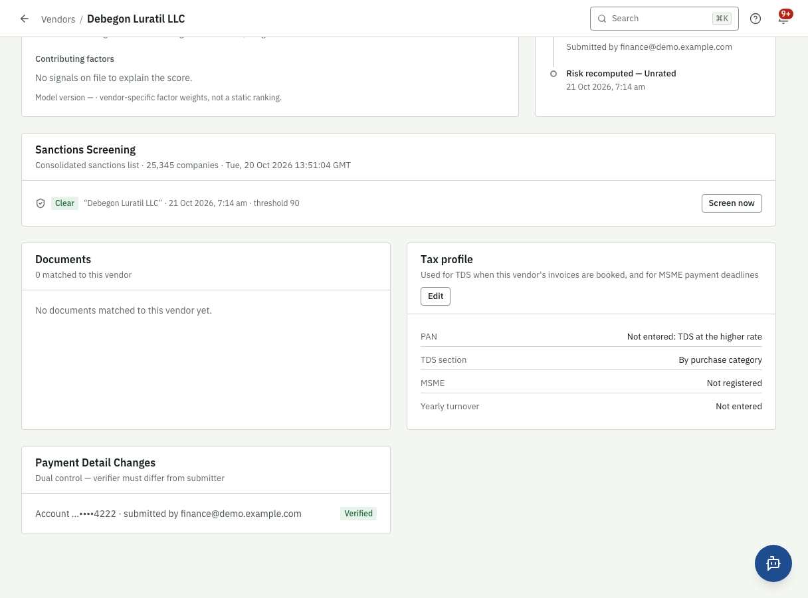 |
| # | Do | Agent · event | You should see | Screen |
|---|---|---|---|---|
| 1 | As finance: Vendors → Rosoboronexport OJSC (a name on the consolidated sanctions list) → Full risk scorecard → Recompute Rating. | Contract & Riskrisk.score.updated |
Rating High because rule R-SAN-01 (sanctions match) fired, whatever the points; the clearance check says not cleared. as described High · override R-SAN-01 (sanctions match, non-remediable) · not cleared (override_R-SAN-01) | 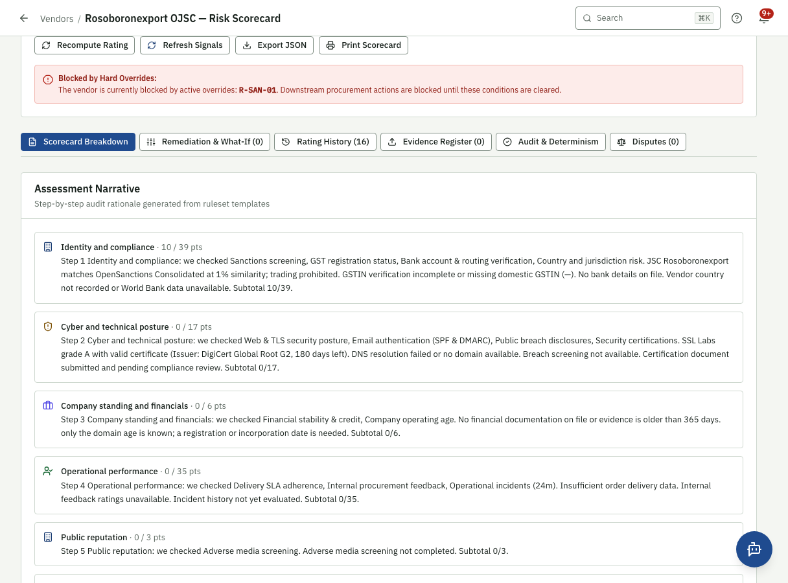 |
| 2 | As admin: vendor page → Record decision → Accept risk for 30 days, with a justification. | Contract & Risk— (refused) |
Refused: a sanctions match (or a prohibited country) can't be accepted; only resolving it, e.g. an upheld dispute, changes the rating. as described admin's accept risk → refused (400 non_remediable_override) · still not cleared | — |
| 3 | As requester: a ₹3,800 request for that vendor; as approver: approve. As finance: open the contract → Sign now, tick the risk acknowledgement. | Approval & Inventory → Contract & Riskapproval.decided, contract.generated |
The Vendor risk panel says signing is blocked; signing is refused even with the acknowledgement. as described contract generated · signing with the acknowledgement ticked → refused (409 vendor_blocked) | 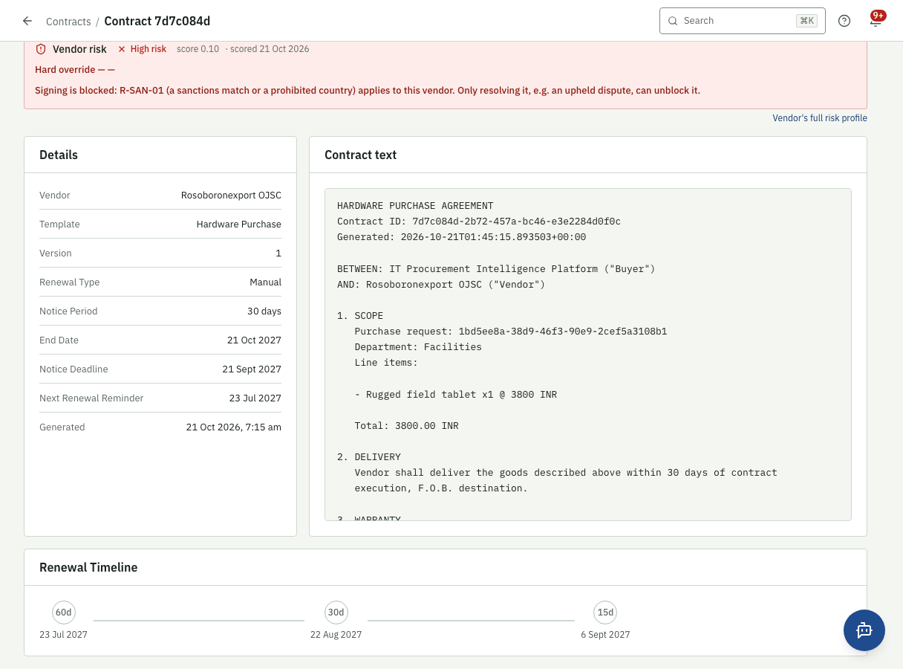 |
| 4 | (Presenter's terminal) docker run … contract-risk-agent ml/redteam_scorecard.py: 22 attack profiles through the real scorecard and clearance code. | Contract & Risk (offline)— |
22/22 profiles as expected: sanctions behind a perfect record, accept-risk on a sanctions match, missing data shown as Low, stale checks, petty-purchase abuse, old approvals… (table in risk-model.html). as described 22/22 profiles as expected | — |
| # | Do | Agent · event | You should see | Screen |
|---|---|---|---|---|
| 1 | As finance: Documents → Upload an invoice from a Karnataka supplier that charges IGST (a supply within the state). | Document & Vendordocument.classified, invoice.tax_flagged |
Status Needs review; the GST check panel says expected CGST + SGST, found IGST. The confidence score is unchanged. as described flagged: supplier in Karnataka, place of supply Karnataka: expected CGST + SGST, found IGST ₹9,000.00 | 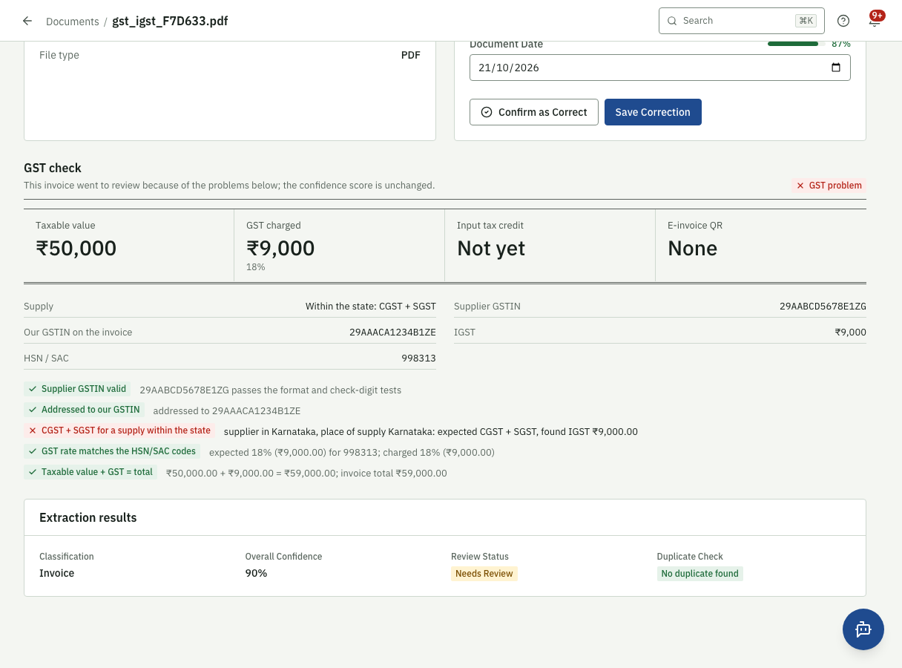 |
| 2 | Upload the same supplier's correct e-invoice (CGST + SGST, signed QR code). | Document & Vendordocument.classified |
GST correct; every check green, E-invoice QR: Verified (the portal's signature checked offline). as described GST correct (CGST + SGST within Karnataka, 18 % for SAC 998313) · e-invoice QR signature verified | 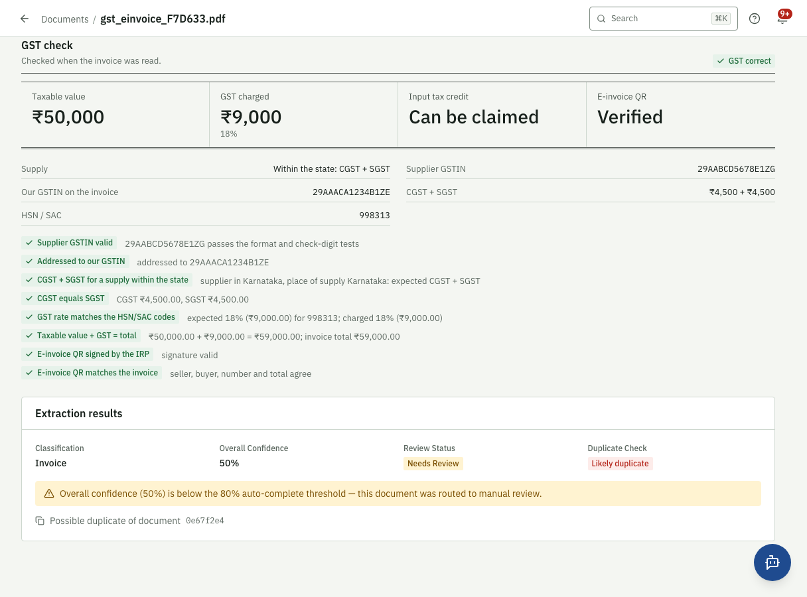 |
| 3 | Open GST and TDS (left menu). | Document & Vendor + Approval & Inventory— |
The month's figures: invoices checked, GST problems, input tax, reverse charge payable; each invoice with its check; GSTR-2B upload; TDS and MSME tab. as described this month: 36 invoices checked, 11 with a GST problem | 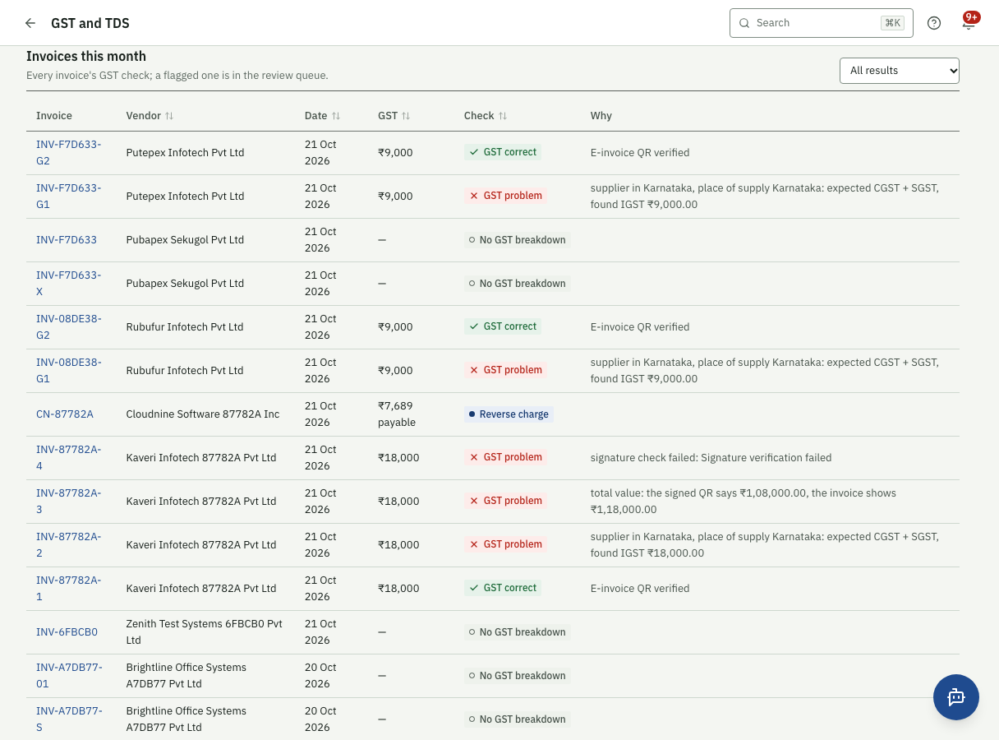 |
| # | Do | Agent · event | You should see | Screen |
|---|---|---|---|---|
| 1 | As requester: open the assistant (bottom right) → hi, then like what, then sure procurement is easy like vendors. | Assistant— |
A natural greeting with example questions; fresh examples for like what; the remark is taken as a remark (vendor questions offered), not a lookup for a vendor called “sure procurement”. as described greeting with examples · 'like what' gives new examples · a remark about vendors offers vendor questions | — |
| 2 | As finance: Are there any SaaS license anomalies? | Assistant + Approval & Inventory— |
A yes/no from live licence scores, how detection works, the current threshold (0.39, a business rule), the licences closest to it and what to do next. as described No: none of the 5 licences is anomalous right now (no score at or above 0.39). Closest to the line: | — |
| 3 | As requester: Which software licences have unassigned seats we could reclaim? | Assistant— |
Licences are staff-only: the assistant says so and offers what the requester can ask. as described requester asking about licences → told it's for approvers, finance and admins | — |